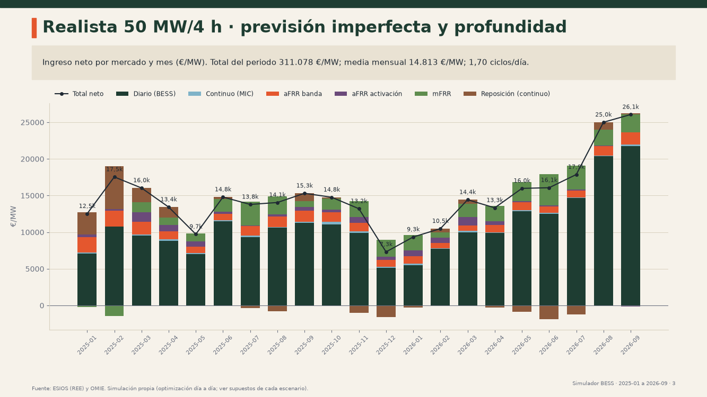
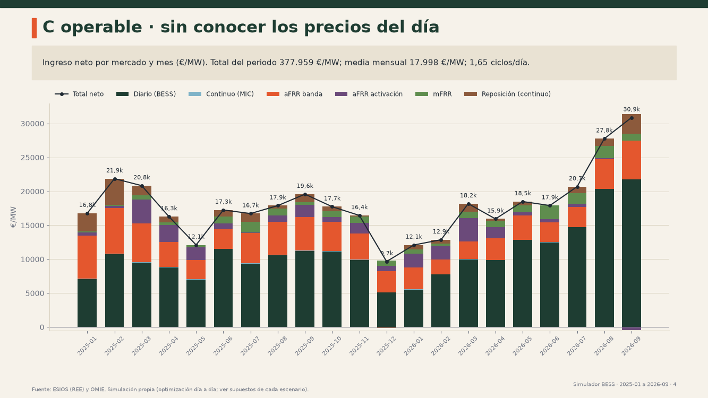
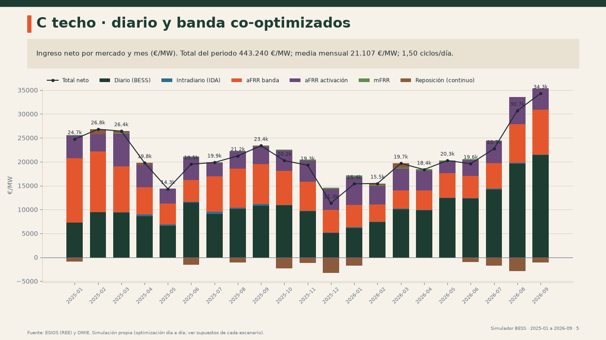
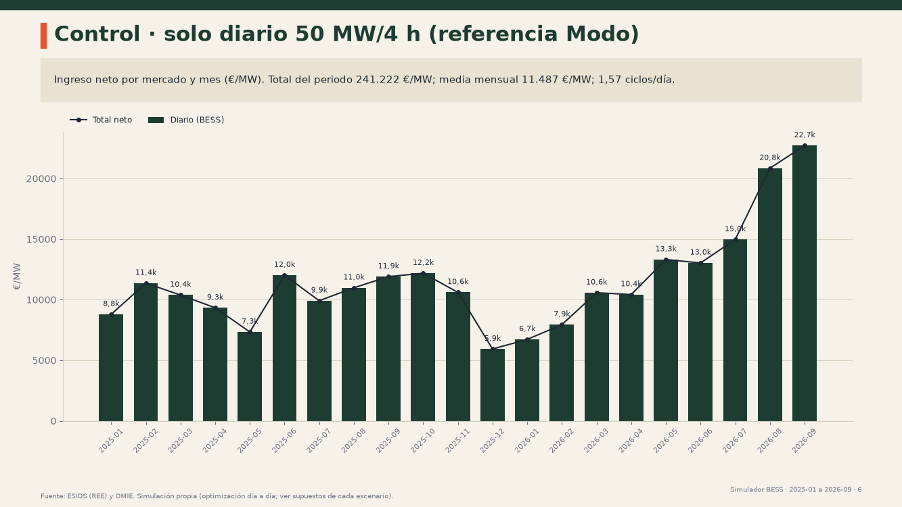
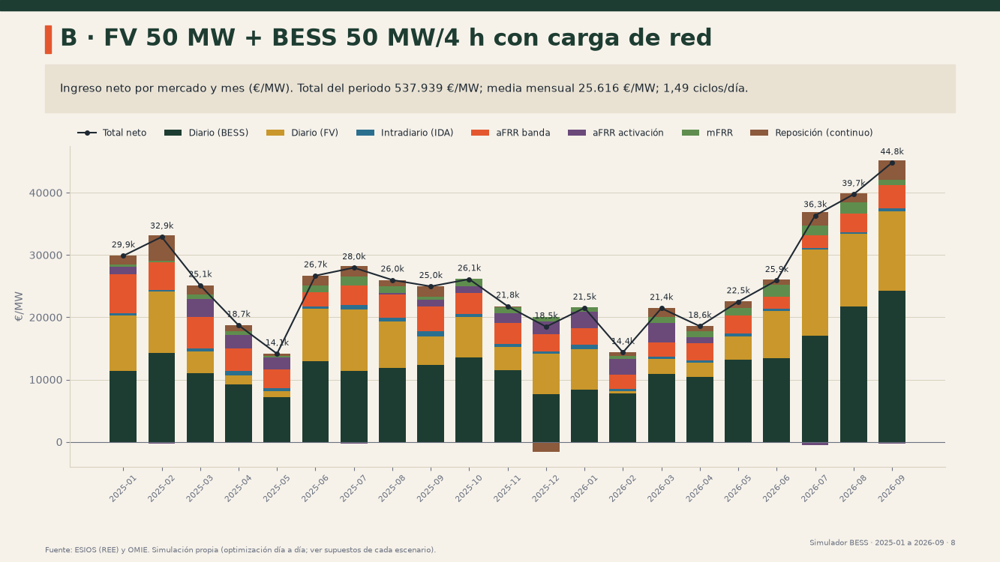
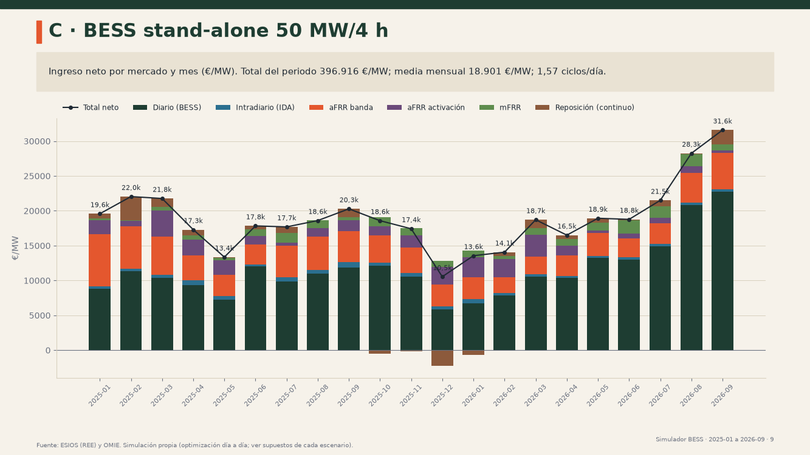
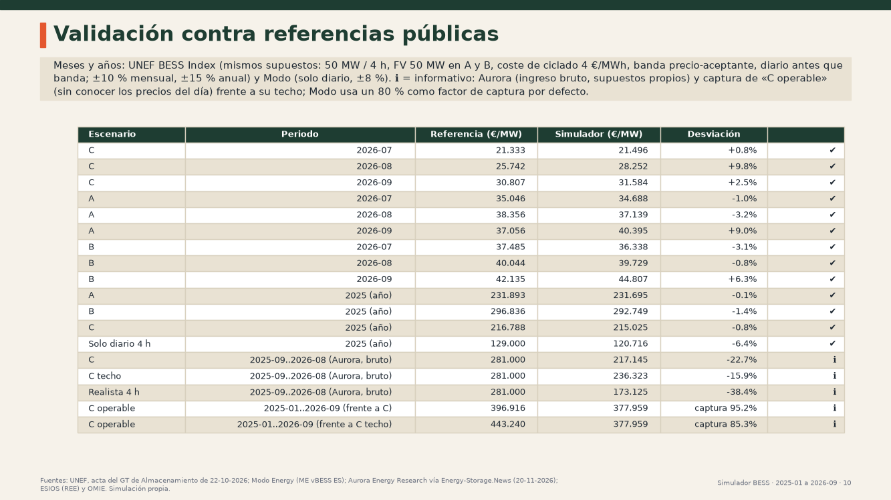
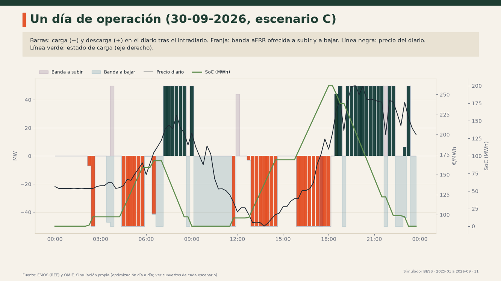

Ingreso neto de mercado de baterías en la península, 2025-01 a 2026-09. Optimización con datos públicos de ESIOS (REE) y OMIE.
Informe completo (PDF) · Radar semanal
| Escenario | Total periodo (€/MW) | Anualizado (€/MW·año) | Ciclos/día | Precio medio de descarga (€/MWh) |
|---|---|---|---|---|
| Realista 50 MW/4 h · previsión imperfecta y profundidad | 311.078 | 177.968 | 1,70 | 91 |
| C operable · sin conocer los precios del día | 377.959 | 216.231 | 1,65 | 93 |
| C techo · diario y banda co-optimizados | 443.240 | 253.578 | 1,50 | 84 |
| Control · solo diario 50 MW/4 h (referencia Modo) | 241.222 | 138.003 | 1,57 | 105 |
| A · FV 50 MW + BESS 50 MW/4 h sin carga de red | 442.187 | 252.975 | 1,20 | 93 |
| B · FV 50 MW + BESS 50 MW/4 h con carga de red | 537.939 | 307.755 | 1,49 | 96 |
| C · BESS stand-alone 50 MW/4 h | 396.916 | 227.076 | 1,57 | 92 |









A, B, C, C techo y solo diario: previsión perfecta (cota superior). C operable y realista: deciden sin conocer los precios del día. No incluye IVPEE, peajes, GdO, restricciones técnicas ni O&M. Fuente: ESIOS (REE) y OMIE. Elaboración propia.